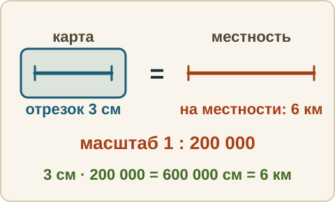
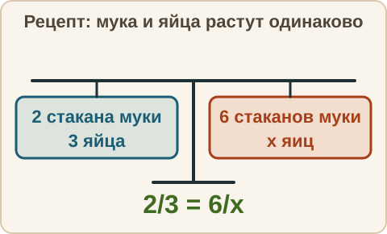
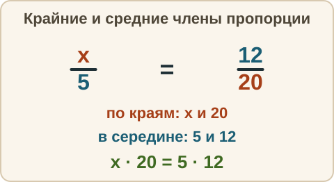

Математика: база · занятие 15Отношение, пропорция, масштаб
Цель: ты записываешь отношение, решаешь пропорцию по основному свойству и считаешь по масштабу карты или плана. Это задания 1–5 ОГЭ (масштаб на плане, чтение условия) и текстовые задачи вроде «если за 5 часов — то за 7». Смесь сегодня — недельный срез. Ответы и подсказки спрятаны: сначала реши сам, потом нажми кнопку.
Как записывать ответ. Число — целое число. Дробь — через черту и сокращённая до конца, например 3/4. Десятичная дробь — с запятой, например 3,25. Проценты записывай просто числом, без знака %; в пропорции ответ — число x.
Вспомнить
Без подсказок, сразу проверка. Отмечай, на чём споткнулся, — в журнал.
- Было 80, стало 100. На сколько процентов стало больше?
- Цена 400 рублей, наценка 5 %. Новая цена в рублях?
- 15 % числа равны 9. Найди число.
- 3/4 : 3/8
- 0,6 : 0,05
- (−4) · (−6) + 3
Беглость: отношение как дробь
Игра «отношение как дробь»: отношение «2 к 8» записываем несократимой дробью (если целое — просто числом). Ошибся — пример вернётся: попробуй ещё раз. Без таймера.
- Отношение 2 к 8 — запиши несократимой дробью.
- Отношение 15 к 5 — запиши несократимой дробью.
- Отношение 12 к 18 — запиши несократимой дробью.
- Отношение 6 к 24 — запиши несократимой дробью.
- 10 к 40 — это сколько процентов?
И ещё: куда «едет» запятая при умножении и делении на 10 и 100? Скажи словами, потом ответь.
- 3,5 · 10
- 42 : 100 — десятичной дробью
Правило
Отношение. Отношение чисел a и b — это частное a : b, записанное как a : b или a/b. Оно показывает, во сколько раз a больше b, или какую часть a составляет от b. Здесь a и b — числа одной величины в одних единицах (оба в сантиметрах или оба в килограммах), b не равно нулю. Например, отношение 8 к 20 — это 8/20 = 2/5: восемь — это две пятых от двадцати.
Пропорция. Пропорция — равенство двух отношений: a/b = c/d. Основное свойство пропорции: произведение крайних членов равно произведению средних: a · d = b · c. Здесь a, b, c, d — числа (b и d не равны нулю); a и d стоят «по краям» записи a : b = c : d, а b и c — в середине. Если неизвестно одно число, его находят так: неизвестное крайнее = (средний · средний) : известный крайний.
Когда пропорция работает. Когда величины растут одинаково: «вдвое больше муки — вдвое больше яиц», «вдвое больше времени при той же скорости — вдвое больший путь». Если скорость меняется, пропорция уже не годится.
Масштаб. Масштаб — отношение длины на карте или плане к настоящей длине на местности, обе длины — в одних единицах. Запись 1 : 50 000 означает: 1 см на карте — это 50 000 см на местности, то есть 500 метров. Чтобы перейти от сантиметров к метрам, делим на 100; к километрам — на 100 000.


Из жизни. В рецепте на 2 стакана муки идёт 3 яйца. Если муки 6 стаканов, яиц должно быть втрое больше, то есть 9.
Разобранный пример
1 (пропорция). На 2 стакана муки — 3 яйца. Сколько яиц на 6 стаканов?
- Записываем пропорцию. Слева — «мука к яйцам»: 2 к 3. Справа — тоже «мука к яйцам»: 6 к x. Получается 2/3 = 6/x.
- Основное свойство: 2 · x = 3 · 6. Значит, 2x = 18, x = 9.
- Ответ: 9 яиц. Проверка: муки в 3 раза больше (6 : 2 = 3), яиц тоже в 3 раза больше (3 · 3 = 9).
2 (масштаб). Масштаб 1 : 200 000. На карте 3 см. Сколько километров на местности?
- 3 · 200 000 = 600 000 см на местности.
- 600 000 см : 100 = 6000 м; 6000 м : 1000 = 6 км.
- Ответ: 6 км.
С подсказкой
Решай сам. Подсказку открывай, только если застрял.
- Найди x: x/5 = 12/20.

Сам
Ответ — число. Два раза не сошлось — появится кнопка «Показать решение».
- x/7 = 12/21. Найди x.
- 4/x = 10/25. Найди x.
- 9 тетрадей стоят 135 рублей (цена всех тетрадей одинакова). Сколько рублей стоят 4 такие тетради?
- Масштаб 1 : 10 000. На карте 7 см. Сколько метров на местности?
- Расстояние между городами 90 км. На карте оно 3 см. Масштаб карты записан как 1 : N. Чему равно N?
Ловушка
Ловушка. В пропорции слева и справа порядок должен быть одинаковым. В примере с мукой многие пишут «мука к яйцам» слева и «яйца к муке» справа: 2/3 = x/6. Тогда выходит, что яиц стало меньше при большей муке, — это абсурд. Проверка: если муки стало больше, яиц тоже должно стать больше. Ещё одна ловушка — масштаб: при 1 : 30 000 один сантиметр на карте — это 30 000 САНТИМЕТРОВ на местности, а не километров. 6 см на карте — это 180 000 см, то есть 1,8 км, а не 180 000 км. Проверь себя: порядок членов одинаков слева и справа? В каких единицах мой ответ?
Смесь — недельный срез недели 5
Это итог недели: 10 заданий. В задании 10 слова «с той же скоростью» значат: едем равномерно, поэтому пропорция работает. Результат смотри в строке «Верно: N из 10» под заданиями.
- 18 % от 250
- Запиши 3/10 в процентах.
- Масштаб 1 : 50 000. На карте 4 см. Сколько метров на местности?
- x/6 = 10/15. Найди x.
- Цена 1200 рублей, скидка 15 %. Новая цена в рублях?
- 5/6 − 1/2
- 2,4 + 3,85
- −3 + 9 − 10
- 20 % числа равны 18. Найди число.
- За 5 часов поезд проехал 400 км. Сколько километров он проедет за 7 часов с той же скоростью?
Журнал
Запиши 1–3 строки: «что перепутал → как проверить». Пример формы: «поставил члены пропорции в разном порядке → проверяю: если одной величины больше, то и другой должно стать больше». Там же отметь результат смеси из строки «Верно: N из 10» — это итог недели 5.
- …